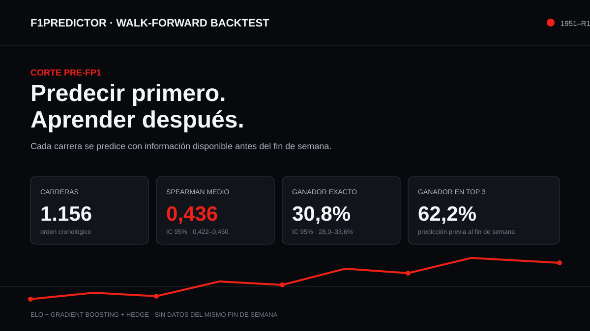

Predict before knowing. Learn afterward.
I wanted to take my interest in Formula 1 beyond watching races and turn it into a data question: how much can be anticipated using what was actually known before each weekend? F1Predictor estimates the finishing order, learns after the result and repeats that sequence from 1951 through 2026.

The most important boundary is time.
To reconstruct each prediction, the model works with information available before the first practice session: accumulated ratings, prior form, circuit, forecast and historical reliability. After the Grand Prix it incorporates the result and moves forward.
The prediction is built
Inputs include accumulated ratings, prior form, circuit, weather forecast, historical reliability and the signals available in each era.
The result is revealed
Errors are calculated, Elo and the models are updated, and only then can that race inform the next one.
The code preserves the sequence
Tests verify that every round is predicted with the same time boundary and turn the method into a reproducible rule.
A combination that can correct its own confidence.
Multi-competitor Elo
Global ratings, teammate duels and constructor pace are updated through surprise: observed result minus expected result.
Gradient boosting
Before each race, an expanding-window model is fitted on every previous event and learns nonlinear interactions.
Hedge blend
After each round, multiplicative weights shift confidence toward the layer that ranked that field more accurately.
Separated risks
Additional classifiers estimate retirement by accident and mechanical failure and are evaluated for calibration.
Each era contributes a different mix of information.
Form and similarity
A numeric fingerprint describes length, corners, downforce, overtaking, elevation, altitude and speed to transfer experience between similar tracks.
Separated capabilities
The driver Elo combines with the internal teammate duel and a constructor pace rating.
Rolling windows
Position, points, grid, retirements and trend use only races that have already happened.
Pre-race context
Forecast archives are included from 2022 onward; for earlier seasons, historical climatology completes the available context.
A reading that gains detail
Pit stops are included from 2011 and OpenF1 strategy and incident signals from 2023.
Accident versus mechanical
Separating both types of retirement models more clearly what belongs to the driver and what belongs to the car.
Beating a competitive reference.
The comparison uses a baseline that ranks drivers by their rolling average finishing position: a simple, solid heuristic available under the same conditions.
| Metric | F1Predictor | Baseline | Reading |
|---|---|---|---|
| Mean Spearman | 0.436 | 0.384 | Paired improvement of +0.051 |
| Exact winner | 30.8% | 26.8% | +4 percentage points |
| Significance | p = 6.8 × 10⁻³⁸ | Wilcoxon on race-level differences | |
| Shared podium | 47.8% | — | 95% CI: 46.2–49.3% |
Reconstruct 75 years without letting the future leak backward.
The process orders every Grand Prix by date and reproduces a fixed sequence: build features, train on the available past, predict, save the prediction, reveal the result and update state. That discipline prevents a win, technical improvement or retirement from influencing an estimate that was supposedly made before it happened.
Features are not treated as one static photograph. Driver performance changes race by race; the teammate duel separates part of the car effect; the constructor accumulates its own pace; form uses rolling windows; and the circuit fingerprint transfers experience between similar tracks. When a signal did not yet exist historically, the pipeline uses only the substitute available in that era.
Before every round, gradient boosting is refitted on an expanding window. In parallel, Elo ratings provide a more interpretable view of relative ability. The Hedge blend observes which layer ranked the latest field more accurately and changes its weight for the next race. The system does not choose one permanent winner among models: it learns how much to trust each one as history unfolds.
Freeze the cutoff
Define the moment before the weekend and build every feature from earlier information.
Rank the field
Combine ratings, form, circuit, weather and reliability into a complete finishing-order prediction.
Measure the error
Compare predicted and actual order through ranking, winner, podium and calibration metrics.
Update state
Add the completed race and repeat the exact same contract for the following round.
Prediction also helps explain why a race is difficult to anticipate.
Saving every forecast before the result makes it possible to inspect much more than the final average. The system can locate eras where the car dominates the signal, circuits where similarity helps, seasons with greater uncertainty and weekends where accidents and reliability disrupt the competitive order. Error stops being one number and becomes material for investigation.
Data that changes through history
Progressive coverage shows how much each modern source adds without pretending it was available in 1951.
Ability versus context
Global Elo, the internal duel and constructor pace expose careers from complementary angles.
Transfer between tracks
The fingerprint turns length, corners, altitude, downforce and overtaking into a comparable structure.
Two different risks
Separating accident and mechanical failure helps estimate the chance of finishing before positions are ranked.
Confidence that can be measured
Probabilities are compared with real frequency to review whether the model is cautious, balanced or overconfident.
Explorable results
Series integrate with Telemetry 1 so drivers, cars and races can be compared without losing the model version.
A personal sports analytics lab.
- Temporal modeling: I built a flow that learns in chronological order and recreates the information conditions of each Grand Prix.
- Feature engineering: I combined driver, constructor, circuit, weather, form and reliability into signals comparable across 75 years.
- Rigorous evaluation: I compared the system against a competitive baseline and measured ranking, winner, podium, calibration and uncertainty.
- Exploratory analysis: the model makes it possible to compare eras, discover patterns and form new questions about performance and context.
- Reproducible construction: code, tests and results form an inspectable foundation that can be extended and connected to Telemetry 1.